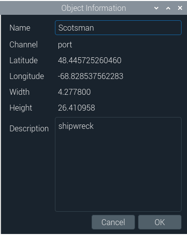

How to use OpenSidescan
This section will guide you through some functionalities of OpenSidescan:
- Creating, Opening, Saving a Project, and Importing Sidescan Files.
- Managing the underwater object inventory.
The screenshots were taken on Linux. There may be some small differences on Windows.
Creating, Opening, Saving a Project, and Importing Sidescan Files
A project in the context of this software contains the sidescan files and the object inventory. Only one project can be open at a time.
Create Project
To create a new project, click on the Project menu and select New Project.
Or, in the toolbar, click on the first icon from the left.
Either way, a window will open indicating that there is an active project and that all unsaved
changes will be lost. Click OK to continue (all unsaved changes will be lost) or click Cancel
to close this window and go back to the active project.
Open Project
To open an existing project, click on the Project menu and select Open Project.
Alternatively, in the toolbar, click on the second icon from the left (representing a sheet partly out of a folder).

Either way, a window will open indicating that there is an active project and that all unsaved
changes will be lost. Click OK to continue (all unsaved changes will be lost) or click Cancel
to close this window and go back to the active project.
After clicking OK, a window will open in which you can select a project file.

Navigate to the folder which contain the project and select it. After clicking
the Open button, the project will be opened in OpenSidescan and the interface will be updated with
the corresponding data.
NOTE: Projects have an .ssp extension.
Save Project
To save a project, select the Project menu and click on Save Project or Save Project As ...

Alternatively, in the toolbar, click on the third icon from the left (floppy disk) to perform Save Project
or the fourth icon from the left (floppy disk with a pen) to perform Save Project As.
- Save Project will automatically store the project if the project file already exists. The first time a project is saved, a window will open to enter the location and the file name.
- Save Project As will prompt a window to specify where to create or override a project file.
NOTE: To avoid losing data, it is recommended to save your Project often. This software doesn't include an autosave feature or any recovering feature. If a Project isn't saved when the application is closed or when a different Project is opened, the data will be lost.
Import Sidescan Files
To import one or several sidescan files into the active project,
select the Project menu and click on Import Sidescan File.

Or, in the toolbar, click on the fifth icon from the left (curved arrow pointing to the top of a box).
Either way, a window will open for you to select the sidescan file(s)
Managing the underwater object inventory
OpenSidescan allows to create and manage an underwater object inventory as part of a project. You can export the inventory as KML or CSV files.
Create an Object with the Computer Mouse
An object can manually be created by "drawing" a rectangle around it on the sidescan image. First,
position the mouse at one corner of the desired object.
Press and hold the mouse left button. Drag the mouse to form the rectangle around
the desired object.
Release the mouse left button. A window will open with the object's latitude, longitude, width, and height.
You may edit the default object name or enter a description. Click OK to create the object.

Display an Object's Details
To display an object's details, with the pointer over the object on the sidescan image, right-click and select "View object details".
Or, with the pointer over the row for the object in the Object Inventory, right-click and select "View object details".
Either way, a window with the object's details will open. You can modify the name or the description.
Remove an Object from the Inventory
To remove an object from the inventory, with the pointer over the object on the sidescan image, right-click and select "Remove from inventory".
Or, with the pointer over the row for the object in the Object Inventory, right-click and select "Remove from inventory".
Either way, a window will open, asking you to confirm. Click Yes to permanently remove the object from the inventory.
Export the Inventory as a KML File
To export the inventory as a KML File, click on the Object Inventory menu, then on Export Inventory,
and select Export KML File.
A window will open to specify the location and the file name
Export the Inventory as a CSV File
To export the inventory as a CSV File, click on the Object Inventory menu, then on Export Inventory,
and select Export CSV File.

A window will open to specify the location and the file name